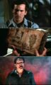
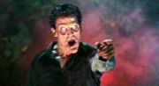

Зловещие мертвецы
1981 (+ ремейк с продолжением (не считая короткометражки «В лесах»), ремейк оригинального фильма + индийский ремейк + сериал)

Книги, которые меняют людей

NO U
Суть такова: главгерой пытается выпилить кровавых демонических зомби, коими ВНЕЗАПНО стали его женщина и собутыльники.
Наиболее существенное отличие от вышеупомянутых серий состоит в том, что главным и самым харизматичным героем является именно положительный персонаж: вооруженный дробовиком и бензопилой Эш в исполнении великолепного Брюса Кэмпбелла. Если первый фильм является ужастиком с элементами чёрной трэшовой сильно замаскированной комедии (анонимус, будучи подростоком и увидев сабж по ТВ, высрал пару кирпичей, так и не увидев юмора), то второй фильм предстаёт уже больше именно трэшовой комедией с элементами ужаса. Алсо, в первом фильме была сцена с деревянными тентаклями.
Первый фильм был снят за сущие гроши и ВНЕЗАПНО срубил бабла. «Зловерещащие Мертвецы 2» является не продолжением первой части, а ремейком первого фильма. Сюжет и Кэмпбелл те же, но с блэкджэком и шлюхами. Доставляют обе части одинаково. Первая — трэшатиной, вторая — инфернальным черным юмором, который в третьей части, которая называется «Армия Тьмы», во многом чуть менее чем полностью превратился в лулзы.
В расширенной версии третьей части авторы:
- Добавляют лулзов (эпизод с зеркалом значительно удлиннился и стал еще больше напоминать Tom vs Jerry(s))
- Дважды пытаются раскрыть тему сисек Шейлы.
- Оба раза почти получается.
- Первая из этих оказий придает завершенность эпизоду эталонного софт-ББПЕ. Учитесь, салаги!
- Вторая как бы намекает нам, что авторы кина изо всех сил стараются не попрать славных традиций первой части.
- Разное по мелочи.
- Фейлят эпизод прибытия Генри ле Реда. В стандартной версии события эпизода весьма пиздато ложились на бодрую музыкальную основу. В расширенной же винрарный трек заменили на какую-то хуйню.
- Тащемта, рекомендуется фанам серии, а также ортодоксальным поклонникам частично завуалированной половой ебли на фоне каминов.
Значимость:
- Главный герой — автор множества винрарнейших высказываний (one-liner’ов), которые, может, и не знакомы основной части населения страны, но зато горячо любимы знающими людьми. Правда, чуть более, чем все разошедшиеся на цитаты выражения были взяты из третьей части. Кроме того, благодаря разнообразным Володарским и Гавриловым (а самый винрарный перевод сделан Михалевым, фраза «главное — у кого ружье» рождена именно им), русские фанаты знают не только оригинальные цитаты, но и по восемь вариантов переводов каждой из них, причем, как это иногда происходит, перевод звучит не хуже, а то и в чем-то ярче оригинала. Ради справедливости стоит заметить, что у фильма были не только разные переводчики, но и две версии, с разными концовками и озвучкой, что объясняет отсутствие данной цитаты в других переводах. Нижеприведённые цитаты — именно из третьей части, которая именно что существует в двух версиях, с двумя разными концовками.
- Эти фильмы дали тот самый заряд вина который содержится в игре Blood.
Цитаты:
- Двуногий, симпатичный, в туфельках отличных…
- (альт. вариант) Хороший, хороший, купил себе галоши…
- Меня зовут Эш, а это (вздымает ружье) моя волшебная палка! (My name is Ash and this is my boomstick) (broomstick — черенок метлы; на него садятся ведьмы при полете). Фразу можно услышать в первом True Crime.
- (альт. вариант) Меня зовут Эш, а это (вздымает ружье) моя бум-палка!
- (альт. альт. вариант) Меня зовут Эш, а это (вздымает ружье) моя гром-палка!
- Если покупаете, то покупайте с умом!
- Сначала ты хочешь меня убить, потом лезешь целоваться — что за нафиг?
- И не трогай тут ничего своими примитивными руками! Сидела бы лучше дома вместе с остальными примитивами.
- Подсласти мне губки, детка!
- Хороший, плохой… главное — у кого ружье! (Good, bad… I’m a guy with a gun.)
- (альт. вариант) Добро, зло… главное — у кого ружье!(встречается в последнем Duke Nukem)
- (альт. альт. вариант) Хороший, плохой… Ружье-то у меня.
- Clatto, Verata, Nicto — перевранная цитата из культовейшего и винрарнейшего фильма «Когда Земля остановилась» — оригинала, школьники, а не унылого римейка 2008 года! Правильно звучит как: «Клаату барада никто».
- Я, может, и плохая, но чувствую себя очень хорошо!
- Эй, сучка! Погнали! (Yo, she-bitch! Let’s go!)
- Только что мочканув из винчестера зомбаря, подхватив телку на руки: «Да здравствует король, детка!»(Hail to the king, baby! — перекочевало в Duke Nukem, также эта реплика есть в Twisted Metal 4).
- Я снова жив! (I live… again! — ушло в Blood и игру Overlord 2 (с этим воплем миньоны ГГ вылезают из «Стикса»))
- Смерть смертным!
- (альт. вариант)Смерть живым!
- После присобачивания пилы к отрубленной руке и обрезания ствола обреза: — «Groovy…» («Ништяк…» или «Круто…») — также перекочевало в Duke Nukem
- Притворяется. Возьми топор.
- « Я проглочу твою душуууу!!!…» — Генриетта. « Проглоти это», — сказал Эш и отравил ее дробью.
- « Умрете до рассвета! Умрете до рассвета!»
- Эш, глядя в зеркало, сам-себе: — « У меня все хорошо. У меня все прекрасно.». Отражение, высовываясь из зеркала, хватает Эша за плечи: — «Я так не думаю. Мы только что измельчили нашу подружку бензопилой. Ну как, прекрасно это звучит?» (почти дословный перевод)
- Радикально вылечив (ампутацией) собственную руку (в которую вселилась местная НЕХ), Эш обнаружил, что возможности функционировать это ее не лишило. Поскольку иначе б кина не было, теперь уже бесполезная конечность пошла не на растопку, а под ведро («Вот твой новый дом», — сказал Эш, ставя оное на оную). Сверху на ведро Эш, для надежности, наклал книжек. Верхней из них был роман «Прощай, оружие!» Хэмингуэя (о любви на фоне первой мировой войны). Цимес в том, что оригинальное название книги, «A Farewell to Arms», можно и по другому перевести.
- Не та книга.
К счастью фанатов православных Зловещих Мертвецов Брюс Кэмпбелл в 2007 году снял зачётный фильм «My Name Is Bruce», который является пиздатой пародией на жизнь себя самого в своём не самом весёлом и успешном нынешнем виде.
В некоем маленьком городке начинают происходить страшные вещи, и жители не придумывают ничего лучше, кроме как пригласить Брюса Кэмпбелла. По их мнению никто не справится с тварями лучше парня из «Зловещих мертвецов». Но на самом-то деле, у Брюса нет ружья, он никогда не пользовался бензопилой и многие погибнут, прежде, чем он разберется, что к чему.
В 2013 году вышел внезапно весьма доставляющий ремейк этого опуса. Хорош тем, что получился реально страшным и сохранил ключевые сцены из оригинальных фильмов (погреб, изнасилование ветками и отпиливание руки присутствуют). Брюс там тоже присутствует, появляясь после титров с коронным «Groovy!».
Почуяв наживу, Рэйми пообещал кучу сиквелов (причём и к ремейку, и к «Армии Тьмы»), но затем решил вместо них выпустить сериал. Первый трейлер вышел уже в 2015 году, и фанаты оживились — судя по всему, должен был быть эпик вин, с постаревшим, но по прежнему крутым Эшем и чернейшим юмором. Как ни странно, первая серия, вышедшая на Хэллоуин, не посрамила оригинал — Эш отжигает же с первых секунд, как и его вражины — (спойлер: так например снятая Эшем девушка ВНЕЗАПНО оказывается ёбаным зомби). Рекомендуется к просмотру в озвучке от Amedia, остальные переводы безблагодатно унылы. Забавно, что продюсеры настолько уверены в успехе сериала, что продлили его на второй сезон ещё ДО выхода первой серии.
Помимо всего прочего, есть интересный факт — у Рэйми в качестве сиквела «Армии Тьмы» была идея использовать обе концовки фильма — как ту, где Эш нормально возвращается в своё время, так и в ту, где он попадает прямо в постапокалиптический Лондон. Запутанная хронология, возможное возвращение Злого Эша — одним словом, интересная задумка. Но сериал поставил на ней крест. Хотя кто знает…
Алсо, в провинциальном Архангельске имеет место УГ ВИА «Зловещие Кузнецы», название которых пародирует сабж. Алсо-2, всё у того же Сектора Газа есть альбом с сабжевым названием.